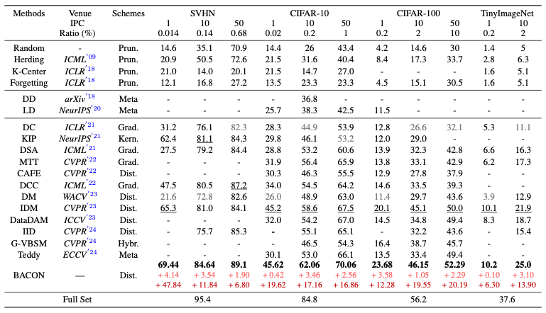

Figure 1: Comparison of our method with previous methods: (a) Existing DD methods typically align gradients and distributions, but lack theoretical guarantees. (b) BACON models DD as a Bayesian optimization problem, generating synthetic images by assessing likelihood and prior probabilities, thereby improving accuracy and reducing training costs.
Abstract
Abstract: Dataset Distillation (DD) aims to condense large datasets into compact synthetic sets that preserve performance on unseen data, thereby reducing storage and training costs. However, most existing methods emphasize empirical performance without solid theoretical grounding, leaving issues such as optimization inefficiency and the lack of theoretical guarantees against suboptimal solutions unresolved. To bridge this gap, we propose the BAyesian optimal CONdensation framework (BACON), the first to incorporate a Bayesian perspective into dataset distillation. BACON offers a principled probabilistic formulation by casting DD as a Bayesian optimization problem, addressing the lack of Bayesian theoretical analysis in prior methods. To characterize the theoretical limit of DD, we derive a numerically tractable lower bound on the expected risk over the joint distribution of latent variables. Under mild assumptions, we obtain an approximate solution for data synthesis, where incorporating prior knowledge improves optimization efficiency through guiding posterior estimation. We evaluate BACON against 18 state-of-the-art methods on four standard image classification datasets under various images-per-class (IPC) settings, where it consistently demonstrates superior performance. For example, under the IPC-10 setting on CIFAR-10, BACON achieves the largest accuracy gain of 17.16\% among all methods, outperforming the second-best approach, IDM, by 3.46\%, while also reducing both synthesis and training costs. These results underscore the theoretical soundness and practical effectiveness of BACON for dataset distillation. Code and distilled datasets are available at BACON.
Background, Motivation, and Contribution
Dataset Distillation (DD) aims to reduce dataset size while maintaining model performance. Despite significant progress in dataset distillation, most existing methods prioritize empirical performance over theoretical grounding, leading to inefficient optimization and a lack of theoretical guarantees against suboptimal solutions. Fundamentally, DD can be framed as an \textbf{optimization problem over probability distributions}, yet existing approaches lack a principled probabilistic formulation as shown in Figure 1(a). To explore Bayesian principles for dataset distillation, leading to the following key research questions:
How can dataset distillation be framed within a probabilistic framework?
What is the theoretical lower bound for optimal condensation?
How can Bayesian methods enable efficient and practical data synthesis?
To address the aforementioned challenges, we propose the Bayesian Optimal Condensation Framework (BACON), the first to apply a Bayesian perspective to dataset distillation. BACON formulates dataset distillation (also referred to as condensation) as a Bayesian optimization problem that minimizes expected risk. A theoretical lower bound is derived over the joint distribution of latent variables, revealing the fundamental limits of optimal condensation. For practical implementation, the risk is approximated under specific assumptions, enabling efficient data synthesis through likelihood estimation and prior knowledge from the original dataset. The BACON method is illustrated in Figure 1(b), along with results on accuracy and training time. BACON is evaluated against 18 state-of-the-art methods on four standard image classification datasets: SVHN, CIFAR-10, CIFAR-100, and TinyImageNet, under varying IPC settings. It consistently outperforms all compared methods, including gradient-based approaches (e.g., DC, DSA, DCC), distribution-based approaches (e.g., IDM, DataDAM, IID), and recent methods such as G-VBSM and Teddy. For example, under the IPC-10 setting on CIFAR-10, BACON achieves the highest accuracy improvement of 17.16%, surpassing the second-best approach, IDM, by 3.46%, while also reducing both synthesis and training costs. These results highlight the theoretical rigor and practical advantages of BACON in dataset distillation.
Key Benefits of BACON:
First Bayesian DD Framework: We are the first to introduce a Bayesian framework for dataset distillation, formulating it as a Bayesian optimization problem that minimizes the expected risk. We derive a theoretical lower bound on the expected risk over the joint distribution of latent variables, providing new insights into the fundamental limits of optimal condensation.
Efficient Distillation Algorithm: We propose the BACON framework (Bayesian optimal CONdensation), an efficient method that minimizes the expected risk for dataset distillation. By incorporating key assumptions such as a Gaussian prior and a total variance constraint, BACON derives loss terms to effectively guide the distillation process.
Superior Empirical Performance: Extensive experiments comparing BACON with various dataset distillation methods across multiple image classification datasets demonstrate that BACON consistently outperforms all methods, showcasing superior performance in both accuracy and efficiency.
Bayesian Optimal Condensation Framework
Figure 2: Overview of BACON: BACON formulates DD as Bayesian risk minimization over embeddings (*), and derives a tractable lower bound for optimization (I), guided by prior and likelihood from the original data (II). Monte Carlo sampling accelerates optimization (III), and a loss is constructed under two assumptions (IV) to update synthetic data via gradient descent (V).
As shown in Figure 2, BACON uses a Bayesian-based joint probability model to optimize dataset distillation. It derives a condensation risk function to compute the optimal synthetic dataset and applies approximation methods for efficient solution. The Bayesian optimal condensation risk function is defined in Theorem 3.4, and the risk function’s theoretical lower bound is established in Theorem 3.6. Assumptions on log-likelihood and prior distribution are introduced to approximate solutions and define the training strategy. BACON represents the first theoretical analysis of optimal condensation via Bayesian principles, providing a strong foundation for improved distillation performance.
Math Theorem Example
Theorem 3.4: The expected risk function in a joint probability distribution can also be calculated as follows:
To estimate the log-likelihood \( \log p(z_{\tilde{x}} | z_{x_i}) \), we make the assumption that \( p(z_{\tilde{x}} | z_{x_i}) \) conforms to a Gaussian distribution. In this distribution, \( \sigma_x^2 \) represents the variance and \( z_{x_i} \) represents the mean. It is denoted as:
Assumption 2: Prior Distribution Approximation with TV Extension
The Total Variation (TV) and CLIP operation are incorporated as distribution priors to represent \( \log p(z_{x_i}) \). The CLIP operation constrains the probability within the bound of \( [0,1] \). In contrast to their study, we extend the TV from a pixel-wise approach to a distribution-wise approach, which is also referred to as the total variation of probability distribution measures.
Results

Table 1: Comparison with previous methods: BACON is compared with 18 state-of-the-art methods (4 coreset selection and 14 dataset distillation) across 4 datasets with varying IPC, including pruning-based (Prun.), meta-learning (Meta), gradient-based (Grad.), kernel-based (Kern.), hybrid-based (Hybr.), and distribution-based (Dist.) approaches (abbreviations in the table). ``Ratio(%)'' indicates the proportion of condensed images relative to the full training set, and ``Full Set'' shows accuracy with the original dataset. DD and LD refer to early-stage distillation methods with AlexNet, while others use ConvNet. Best accuracy (%) is in bold, second-best in underlined, and worst in gray; improvements over the second-best and worst are shown in light red and dark red, respectively.
Figure 3: Performance comparison with BACON, IDM, and DM across varying training steps on the CIFAR-10/100 datasets: The blue line with white circles represents our proposed BACON, the orange line with white circles represents IDM, and the green line with white circles represents DM. All synthetic images are generated using the CIFAR-10/100 datasets across training steps from 0 to 20000 with IPC-1, IPC-10, and IPC-50, respectively.
Visulization
Paper
Zheng Zhou, Hongbo Zhao, Guangliang Cheng, Xiangtai Li, Shuchang Lyu, Wenquan Feng, and Qi Zhao BACON: Bayesian Optimal Condensation Framework for Dataset Distillation.
In submission, 2024.
(hosted on ArXiv)
We gratefully acknowledge the contributions of the DC-bench and IDM teams, as our code builds upon their work. You can find their repositories here:
DC-bench and
IDM.
 [Paper]
[Paper]
 [GitHub]
[GitHub]
 [Distilled Dataset]
[Distilled Dataset]